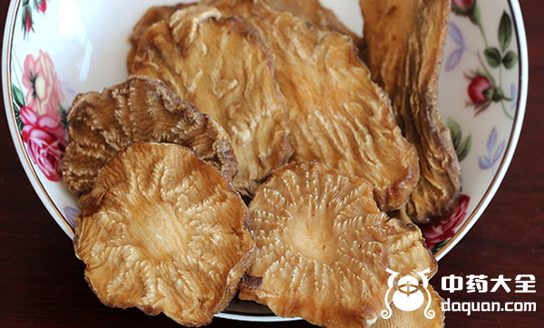

如今人们越来越重视起自己的身体健康问题，开始使用各种的方式来养身，调理身体。阿拉善肉苁蓉大家肯定不会陌生，阿拉善肉苁蓉非常珍贵，野生的更是极少数，价格昂贵，阿拉善肉苁蓉功效十分强大，不仅能够补肾壮阳，补益精血，还能提高自身免疫力。
1、温补阳气

阿拉善肉苁蓉有着温补的作用，可以帮助阳气生长，不会药效太强直接抑制阴津。适合阳气虚弱，大病初愈还有刚生过孩子的这种滋补身体。
2、男性壮阳
阿拉善肉苁蓉有着壮阳的功效，并且能治疗男性的早泄等男性疾病，阿拉善肉苁蓉的壮阳功效非常显著，经常食用对男性非常好。
3、驱除疲惫
如今人们都很好压力非常大，经常会有熬夜加班、学习的时候，但是第二天不一定是休息日还要继续工作学习，阿拉善肉苁蓉有着驱除疲惫的功效，可以帮助脑子活跃起来。
4、增强免疫力
因为现代人的缺乏运动，病毒很容易入侵人体，这个时候不仅会身体疲惫难受，并且影响生活，但是这个时候食用阿拉善肉苁蓉可以增强免疫力，帮助身体康复。
5、美容养颜
阿拉善肉苁蓉对于女性来说有着美容养颜的作用，因为阿拉善肉苁蓉中有着很好的抗氧化的作用，可以缓解人体衰老的速度，还能调节内分泌，使皮肤红润有光泽。
6、排毒作用
阿拉善肉苁蓉有着润肠通便的作用，加速肠胃蠕动，能将体内废弃物及时排除，所以有着非常好的排毒的作用，阿拉善肉苁蓉还能治疗长期便秘。
7、补益精血
阿拉善肉苁蓉有着补益精血的作用，精血不足会导致人皮肤发黄，身体虚弱，月经不调等很多相关疾病，阿拉善肉苁蓉补益精血功效非常强大，连续吃上一个星期就可以得到改善。
8、暖宫
女性宫寒容易导致很多问题，月经不调还有痛经，以及不孕不育，女性吃肉苁蓉有着暖宫的功效，女性子宫得到温养不仅会解决很多妇科问题还能气色越来越红润有光泽。
结语：通过上文的介绍，相信大家都了解了阿拉善肉苁蓉的功效，阿拉善肉苁蓉比肉苁蓉的功效更强，希望大家在生活中可以食用阿拉善肉苁蓉来养身。
推荐阅读：